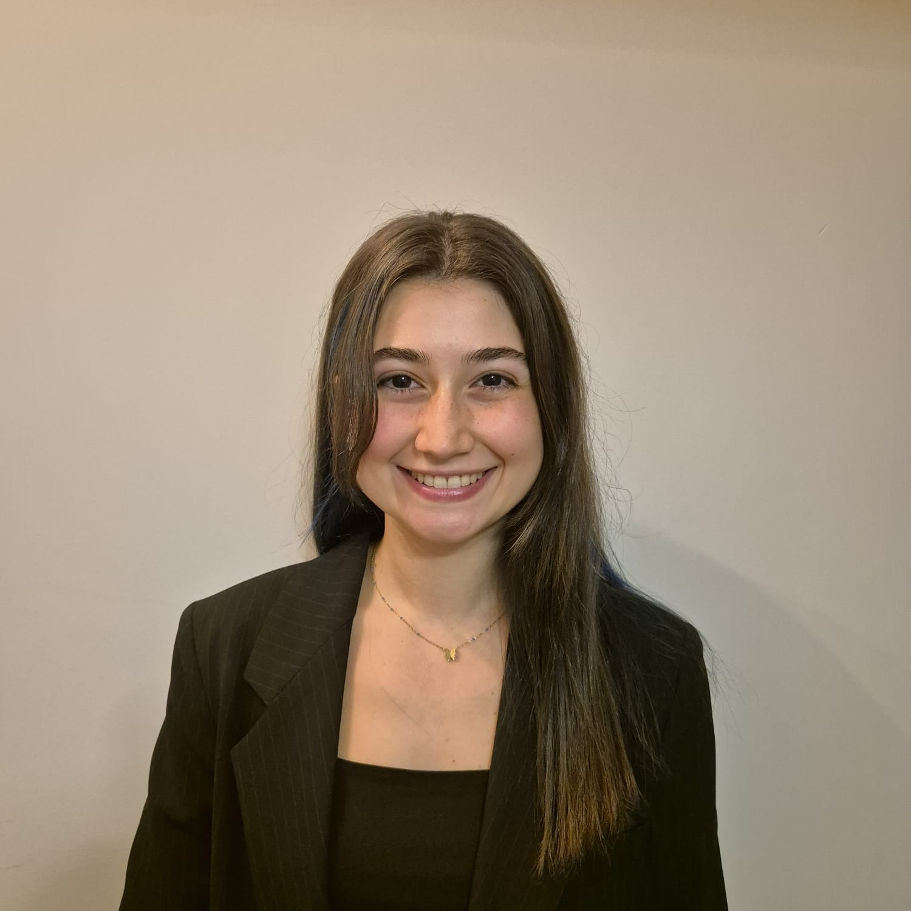

Computer Science & Engineering graduate from Sabancı University (minor in Finance) with hands-on experience in backend and frontend development, system design, and product-driven projects. I have worked with teams at ASELSAN, Intertech, and TÜBİTAK on real-world applications as well as research involving computer vision and LLM-based solutions. Beyond engineering, I served as Co-President of SUAK, co-founded DUOGAMES, and actively volunteer at MAPUDER and AFAD. I am looking for junior-level, product-focused engineering roles where I can grow technically while building scalable, impactful products.

Selected Work
A privacy-aware framework to monitor interactions between users and large language models using a dual-LLM architecture. Applied prompt chaining to infer sensitive user attributes (gender, income level) from textual input for privacy analysis.
View on GitHubFeb 2025 – Jan 2026
Led a 6-person team as Scrum Master to build a full-stack e-commerce app. Java Spring Boot backend, React frontend, MySQL on AWS.
Oct 2024 – Jan 2025
View on GitHubAwareness website for earthquake precautions for the Sabancı University community. Designed mobile app interface in Figma.
Feb 2024 – May 2024
View on GitHubData science project using personal Spotify data scraped via BeautifulSoup for trend analysis and visualization of listening habits.
Oct 2023 – Jan 2024
View on GitHubWork History
Toolkit
Beyond Code
Volunteer Work